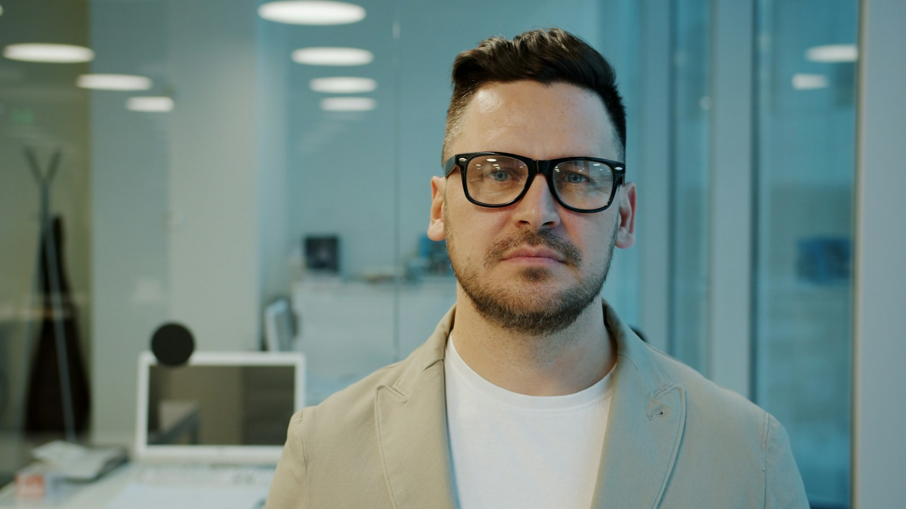

Assess and enrol
A short spoken placement conversation with a teacher, then an advisor call, puts you on the right rung.
Free placementThe path is deliberate: a CEFR ladder of live courses with the same teacher across a level, a cultural syllabus, and Biagio between classes.
Six named milestones, one clear arc of progress. You are placed by a spoken conversation, never a form.
Swipe the five steps
Your teacher is in Rome, Florence or Venice. You are at home. Twelve adults, one native teacher, eighty-five minutes of Italian that you speak, not watch.
Broadcast from the teacher's own city.
Ten to twelve learners.
Pairs and trios, every lesson.
Every class, in your library.
 Marco · Roma (host)
Marco · Roma (host)
Michael